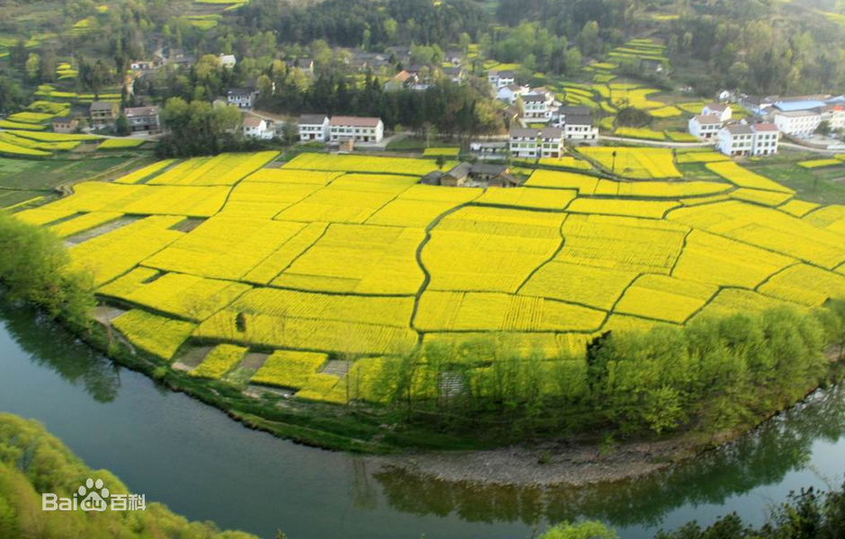
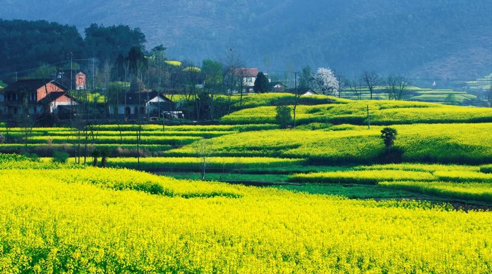
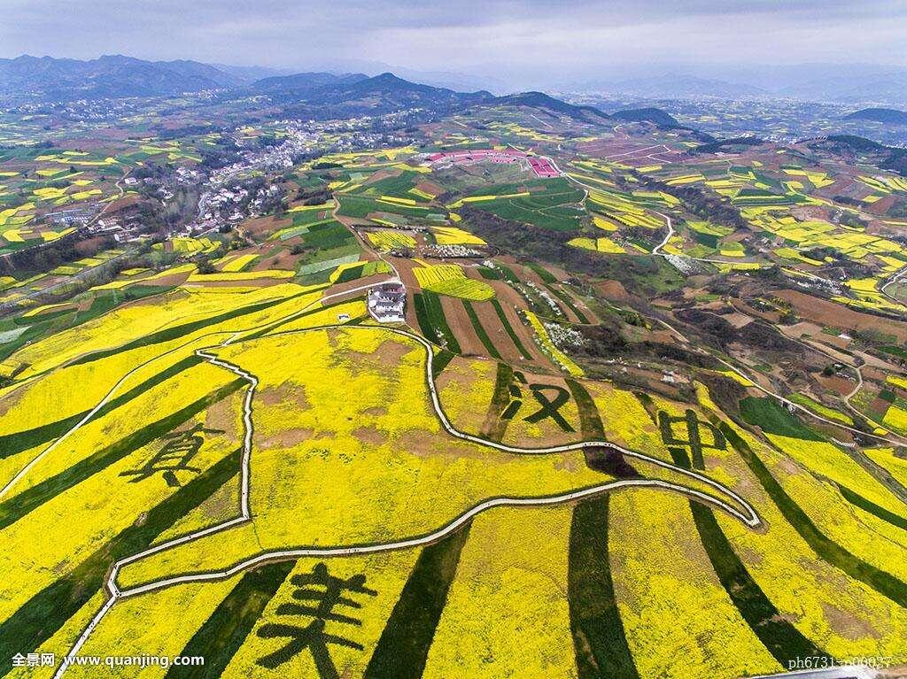
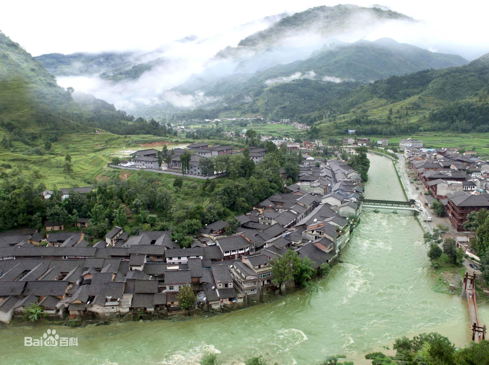
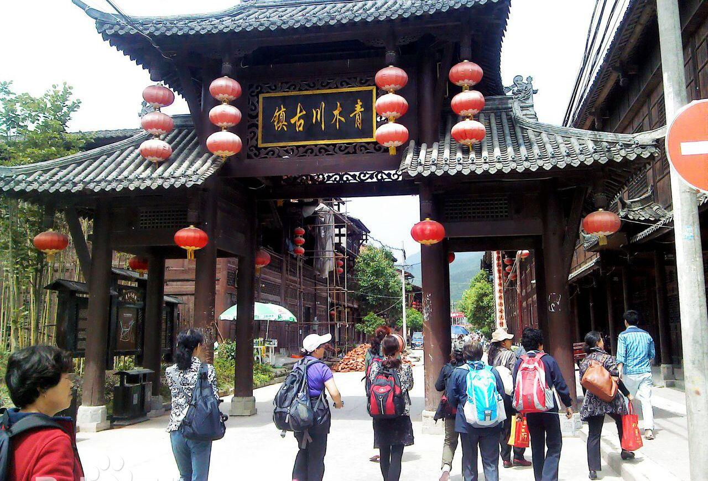
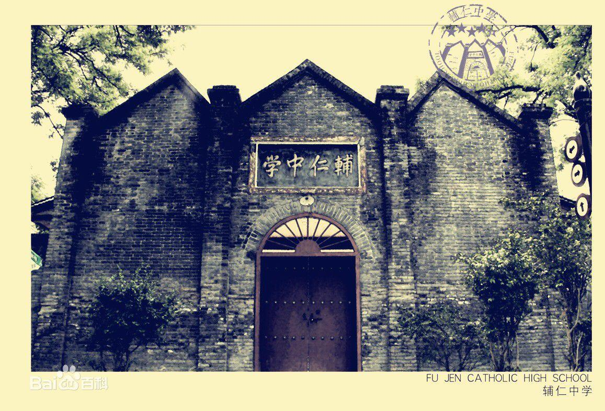
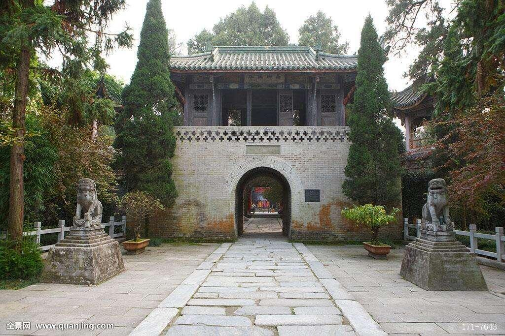
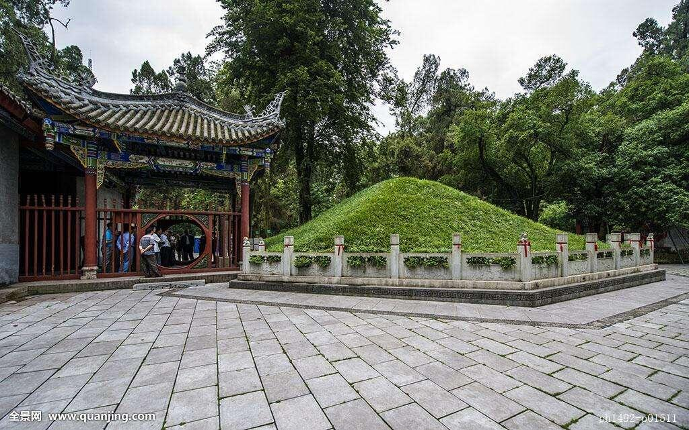
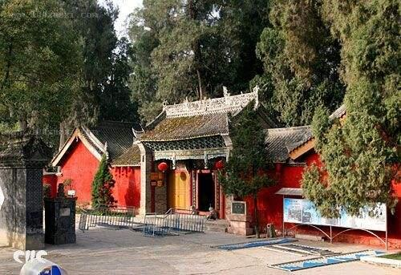

-
汉中油菜花
地处秦巴山区的陕西省汉中市，有112万亩油菜花，年产油料14．4万吨。每年春天，盛开的油菜花与镶嵌其间的麦苗及青山绿水相互掩映，构成汉中盆地一道亮丽的风景线。
   -
青木川
青木川，国家AAAA级旅游景区 [1] 。因一个川道内有一棵青木树（学名为桤树，又称旱冬瓜树、水冬瓜树。）而得名，因人物魏辅唐和古建筑而名声大振。过去，魏辅唐的商号匾牌里就隐含了“辅唐盛世”，体现出他的理想；因与众不同的土政策和宽松的环境，形成一个“世外桃源”，外地各行各业人士纷至沓来，被称为“青木城” 。2014年，随着电视剧《一代枭雄》（何辅唐历史原型人物魏辅唐）的热播，许多人在寻找陕西省的“风雷镇”，其实就是青木川古镇。
   -
勉县武侯墓
武侯墓，即诸葛亮墓，位于汉中市勉县的定军山脚下，因诸葛亮曾获封武乡侯而得名武侯墓。建兴十二年，蜀汉丞相诸葛亮与魏司马懿在渭南相抗，病死于五丈原军中，葬汉中的定军山下。北魏地理学家郦道元《水经注》中记载：“葬于其山，因即地势，不起坟垄”。现存墓冢系后代起封。 诸葛亮墓周围有定军山、少祖山下沿的九条小山岗环抱，九条山岗由青沟、罔子沟、井沟、斩地沟、田家沟、牛角沟、瓦洞沟、龙嘴沟八条小溪分割而成。墓前上岗三层，自定军山向西叠浪而来，约三里许至此成眠弓形，古称“三台书案”。从少祖山下六岗向东势若游龙，倏起忽落五六里，至墓后形成新月者半里许，传为墓之正脉。新月之下，眠弓之内，豁然开张平地三百余亩，左右前后九支环抱，其天造地设实为人工所不能者。 1996年，诸葛亮墓被列为全国重点文物保护单位。
  